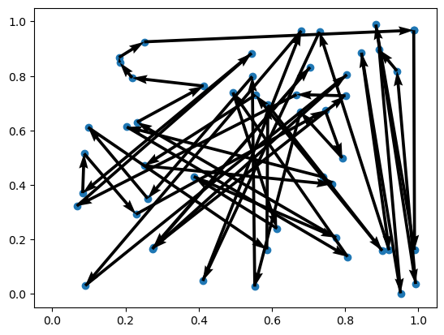
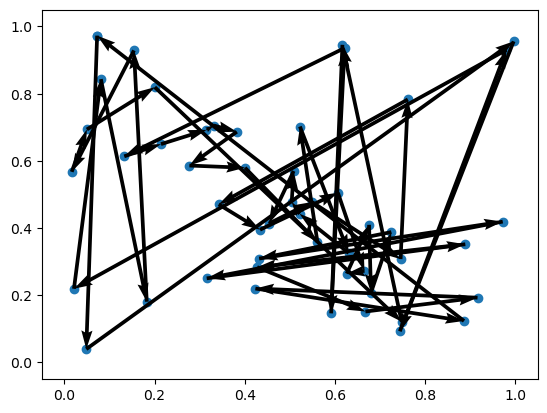
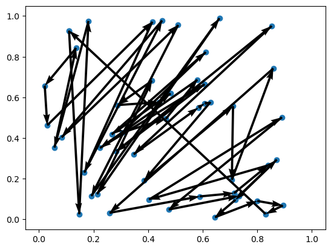
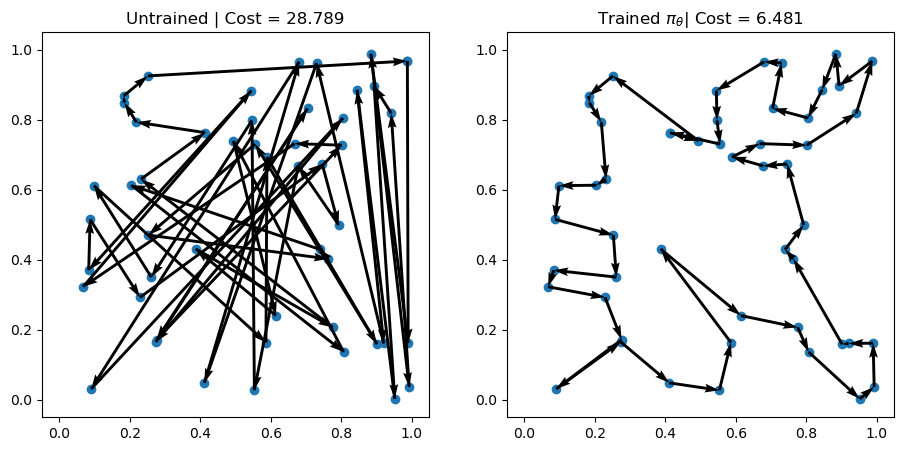
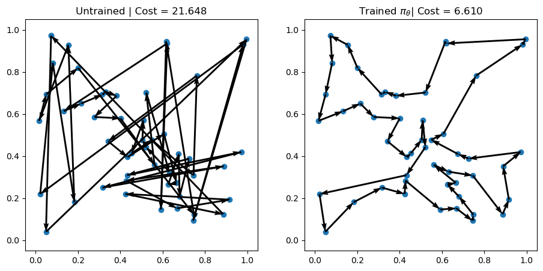
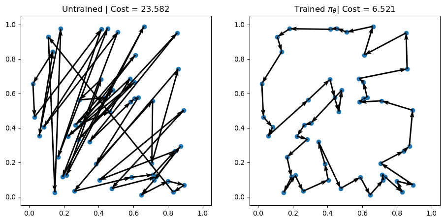

import torch
from tensordict.nn import TensorDictModule
import gymnasium as gym
from torchrl.envs.libs.gym import GymEnv, GymWrapperTorchRLとRL4COによる強化学習
強化学習パッケージ TorchRLの基本的な使用法を紹介し， それを利用した強化学習による組合せ最適化パッケージ RL4CO で巡回セールスマン問題を解く．
TorchRLによる強化学習の基礎
振り子の環境を準備
- 観測 observation: \(x,y,\theta\)
- 行動 action: トルク（回転力）
環境 env を生成し，環境をリセットする． 以下の観測値を含むフィールドをもつ初期状態を表すテンソル辞書が得られる．
- done:
- observation: 観測値
- terminated:
- truncated:
gym_env = gym.make("Pendulum-v1")
env = GymWrapper(gym_env, device="cpu")
reset = env.reset()
print(reset)TensorDict(
fields={
done: Tensor(shape=torch.Size([1]), device=cpu, dtype=torch.bool, is_shared=False),
observation: Tensor(shape=torch.Size([3]), device=cpu, dtype=torch.float32, is_shared=False),
terminated: Tensor(shape=torch.Size([1]), device=cpu, dtype=torch.bool, is_shared=False),
truncated: Tensor(shape=torch.Size([1]), device=cpu, dtype=torch.bool, is_shared=False)},
batch_size=torch.Size([]),
device=cpu,
is_shared=False)行動
リセットに次いでランダムな行動を rand_action で得る．
これもテンソル辞書で，行動 action のフィールドが追加されている．
reset_with_action = env.rand_action(reset)
print(reset_with_action)TensorDict(
fields={
action: Tensor(shape=torch.Size([1]), device=cpu, dtype=torch.float32, is_shared=False),
done: Tensor(shape=torch.Size([1]), device=cpu, dtype=torch.bool, is_shared=False),
observation: Tensor(shape=torch.Size([3]), device=cpu, dtype=torch.float32, is_shared=False),
terminated: Tensor(shape=torch.Size([1]), device=cpu, dtype=torch.bool, is_shared=False),
truncated: Tensor(shape=torch.Size([1]), device=cpu, dtype=torch.bool, is_shared=False)},
batch_size=torch.Size([]),
device=cpu,
is_shared=False)print(reset_with_action["observation"], reset_with_action["action"])tensor([ 0.5448, -0.8386, 0.8938]) tensor([0.0090])ステップ
行動をstepに入れて次のステップに進む． 返値のテンソル辞書には， nextのフィールドが追加されている． nextには次に移る状態を表すテンソル辞書が格納されている．
stepped_data = env.step(reset_with_action)
print(stepped_data)TensorDict(
fields={
action: Tensor(shape=torch.Size([1]), device=cpu, dtype=torch.float32, is_shared=False),
done: Tensor(shape=torch.Size([1]), device=cpu, dtype=torch.bool, is_shared=False),
next: TensorDict(
fields={
done: Tensor(shape=torch.Size([1]), device=cpu, dtype=torch.bool, is_shared=False),
observation: Tensor(shape=torch.Size([3]), device=cpu, dtype=torch.float32, is_shared=False),
reward: Tensor(shape=torch.Size([1]), device=cpu, dtype=torch.float32, is_shared=False),
terminated: Tensor(shape=torch.Size([1]), device=cpu, dtype=torch.bool, is_shared=False),
truncated: Tensor(shape=torch.Size([1]), device=cpu, dtype=torch.bool, is_shared=False)},
batch_size=torch.Size([]),
device=cpu,
is_shared=False),
observation: Tensor(shape=torch.Size([3]), device=cpu, dtype=torch.float32, is_shared=False),
terminated: Tensor(shape=torch.Size([1]), device=cpu, dtype=torch.bool, is_shared=False),
truncated: Tensor(shape=torch.Size([1]), device=cpu, dtype=torch.bool, is_shared=False)},
batch_size=torch.Size([]),
device=cpu,
is_shared=False)print(stepped_data["action"], stepped_data["next"])tensor([0.4661]) TensorDict(
fields={
done: Tensor(shape=torch.Size([1]), device=cpu, dtype=torch.bool, is_shared=False),
observation: Tensor(shape=torch.Size([3]), device=cpu, dtype=torch.float32, is_shared=False),
reward: Tensor(shape=torch.Size([1]), device=cpu, dtype=torch.float32, is_shared=False),
terminated: Tensor(shape=torch.Size([1]), device=cpu, dtype=torch.bool, is_shared=False),
truncated: Tensor(shape=torch.Size([1]), device=cpu, dtype=torch.bool, is_shared=False)},
batch_size=torch.Size([]),
device=cpu,
is_shared=False)マルコフ決定過程
行動をステップに入れたものをstep_mdp関数に入れると次の状態に移る． nextが複数ある場合には，マルコフ決定過程 (MDP: Markov Decision Process)にしたがい，次の状態が選択される．
from torchrl.envs import step_mdp
data = step_mdp(stepped_data)
print(data)TensorDict(
fields={
done: Tensor(shape=torch.Size([1]), device=cpu, dtype=torch.bool, is_shared=False),
observation: Tensor(shape=torch.Size([3]), device=cpu, dtype=torch.float32, is_shared=False),
terminated: Tensor(shape=torch.Size([1]), device=cpu, dtype=torch.bool, is_shared=False),
truncated: Tensor(shape=torch.Size([1]), device=cpu, dtype=torch.bool, is_shared=False)},
batch_size=torch.Size([]),
device=cpu,
is_shared=False)ロールアウト
rolloutを用いると，上の一連の操作を連続で行うことができる． max_stepsの反復の情報を保管したテンソル辞書が返される．
rollout = env.rollout(max_steps=10)
print(rollout, "\n", rollout["observation"])TensorDict(
fields={
action: Tensor(shape=torch.Size([10, 1]), device=cpu, dtype=torch.float32, is_shared=False),
done: Tensor(shape=torch.Size([10, 1]), device=cpu, dtype=torch.bool, is_shared=False),
next: TensorDict(
fields={
done: Tensor(shape=torch.Size([10, 1]), device=cpu, dtype=torch.bool, is_shared=False),
observation: Tensor(shape=torch.Size([10, 3]), device=cpu, dtype=torch.float32, is_shared=False),
reward: Tensor(shape=torch.Size([10, 1]), device=cpu, dtype=torch.float32, is_shared=False),
terminated: Tensor(shape=torch.Size([10, 1]), device=cpu, dtype=torch.bool, is_shared=False),
truncated: Tensor(shape=torch.Size([10, 1]), device=cpu, dtype=torch.bool, is_shared=False)},
batch_size=torch.Size([10]),
device=cpu,
is_shared=False),
observation: Tensor(shape=torch.Size([10, 3]), device=cpu, dtype=torch.float32, is_shared=False),
terminated: Tensor(shape=torch.Size([10, 1]), device=cpu, dtype=torch.bool, is_shared=False),
truncated: Tensor(shape=torch.Size([10, 1]), device=cpu, dtype=torch.bool, is_shared=False)},
batch_size=torch.Size([10]),
device=cpu,
is_shared=False)
tensor([[-0.3323, 0.9432, -0.3913],
[-0.3438, 0.9390, 0.2434],
[-0.3796, 0.9251, 0.7687],
[-0.4574, 0.8893, 1.7127],
[-0.5562, 0.8310, 2.2960],
[-0.6708, 0.7417, 2.9086],
[-0.7798, 0.6261, 3.1803],
[-0.8825, 0.4704, 3.7365],
[-0.9629, 0.2699, 4.3276],
[-0.9993, 0.0383, 4.7006]])方策
簡単な1層の線形層をテンソル辞書を用いて生成し， ロールアウトを行う．
from tensordict.nn import TensorDictModule
module = torch.nn.LazyLinear(out_features=env.action_spec.shape[-1])
policy = TensorDictModule(
module,
in_keys=["observation"],
out_keys=["action"],
)rollout = env.rollout(max_steps=10, policy=policy)
print(rollout)TensorDict(
fields={
action: Tensor(shape=torch.Size([10, 1]), device=cpu, dtype=torch.float32, is_shared=False),
done: Tensor(shape=torch.Size([10, 1]), device=cpu, dtype=torch.bool, is_shared=False),
next: TensorDict(
fields={
done: Tensor(shape=torch.Size([10, 1]), device=cpu, dtype=torch.bool, is_shared=False),
observation: Tensor(shape=torch.Size([10, 3]), device=cpu, dtype=torch.float32, is_shared=False),
reward: Tensor(shape=torch.Size([10, 1]), device=cpu, dtype=torch.float32, is_shared=False),
terminated: Tensor(shape=torch.Size([10, 1]), device=cpu, dtype=torch.bool, is_shared=False),
truncated: Tensor(shape=torch.Size([10, 1]), device=cpu, dtype=torch.bool, is_shared=False)},
batch_size=torch.Size([10]),
device=cpu,
is_shared=False),
observation: Tensor(shape=torch.Size([10, 3]), device=cpu, dtype=torch.float32, is_shared=False),
terminated: Tensor(shape=torch.Size([10, 1]), device=cpu, dtype=torch.bool, is_shared=False),
truncated: Tensor(shape=torch.Size([10, 1]), device=cpu, dtype=torch.bool, is_shared=False)},
batch_size=torch.Size([10]),
device=cpu,
is_shared=False)RL4COによる強化学習で組合せ最適化問題の求解
巡回セールスマン問題の環境 TSPEnvを準備する． 点数は \(50\) の問題例を生成する．
方策はトランスフォーマーを用いる．これはエンコーダーとデコーダーから構成される．
訓練には REINFORCE を用いる．
import torch
from rl4co.envs import TSPEnv
from rl4co.models import AttentionModelPolicy, REINFORCE
from rl4co.utils.trainer import RL4COTrainer# RL4CO env based on TorchRL
env = TSPEnv(generator_params={'num_loc': 50})
# Policy: neural network, in this case with encoder-decoder architecture
policy = AttentionModelPolicy(env_name=env.name,
embed_dim=128,
num_encoder_layers=3,
num_heads=8,
)
# RL Model: REINFORCE and greedy rollout baseline
model = REINFORCE(env,
policy,
baseline="rollout",
batch_size=512,
train_data_size=100_000,
val_data_size=10_000,
optimizer_kwargs={"lr": 1e-4},
)/Users/mikiokubo/miniconda3/envs/jupyterlab/lib/python3.10/site-packages/lightning/pytorch/utilities/parsing.py:208: Attribute 'env' is an instance of `nn.Module` and is already saved during checkpointing. It is recommended to ignore them using `self.save_hyperparameters(ignore=['env'])`.
/Users/mikiokubo/miniconda3/envs/jupyterlab/lib/python3.10/site-packages/lightning/pytorch/utilities/parsing.py:208: Attribute 'policy' is an instance of `nn.Module` and is already saved during checkpointing. It is recommended to ignore them using `self.save_hyperparameters(ignore=['policy'])`.訓練していない方策でロールアウト
# Greedy rollouts over untrained policy
device = torch.device("cuda" if torch.cuda.is_available() else "cpu")
td_init = env.reset(batch_size=[3]).to(device)
policy = policy.to(device)
out = policy(td_init.clone(), phase="test", decode_type="greedy", return_actions=True)
actions_untrained = out['actions'].cpu().detach()
rewards_untrained = out['reward'].cpu().detach()
for i in range(3):
print(f"Problem {i+1} | Cost: {-rewards_untrained[i]:.3f}")
env.render(td_init[i], actions_untrained[i])Problem 1 | Cost: 28.789
Problem 2 | Cost: 21.648
Problem 3 | Cost: 23.582


訓練クラスの生成
RL4COTrainerクラスのインスタンスを準備し， エポック数 \(3\) で訓練を行う．
trainer = RL4COTrainer(
max_epochs=3,
accelerator="gpu",
devices=1,
logger=None,
)Using 16bit Automatic Mixed Precision (AMP)
/Users/mikiokubo/miniconda3/envs/jupyterlab/lib/python3.10/site-packages/torch/amp/grad_scaler.py:131: UserWarning: torch.cuda.amp.GradScaler is enabled, but CUDA is not available. Disabling.
warnings.warn(
GPU available: True (mps), used: True
TPU available: False, using: 0 TPU cores
HPU available: False, using: 0 HPUs
/Users/mikiokubo/miniconda3/envs/jupyterlab/lib/python3.10/site-packages/lightning/pytorch/trainer/connectors/logger_connector/logger_connector.py:75: Starting from v1.9.0, `tensorboardX` has been removed as a dependency of the `lightning.pytorch` package, due to potential conflicts with other packages in the ML ecosystem. For this reason, `logger=True` will use `CSVLogger` as the default logger, unless the `tensorboard` or `tensorboardX` packages are found. Please `pip install lightning[extra]` or one of them to enable TensorBoard support by defaulttrainer.fit(model)val_file not set. Generating dataset instead
test_file not set. Generating dataset instead
| Name | Type | Params | Mode
----------------------------------------------------------
0 | env | TSPEnv | 0 | train
1 | policy | AttentionModelPolicy | 710 K | train
2 | baseline | WarmupBaseline | 710 K | train
----------------------------------------------------------
1.4 M Trainable params
0 Non-trainable params
1.4 M Total params
5.681 Total estimated model params size (MB)
/Users/mikiokubo/miniconda3/envs/jupyterlab/lib/python3.10/site-packages/lightning/pytorch/trainer/connectors/data_connector.py:424: The 'val_dataloader' does not have many workers which may be a bottleneck. Consider increasing the value of the `num_workers` argument` to `num_workers=11` in the `DataLoader` to improve performance.
/Users/mikiokubo/miniconda3/envs/jupyterlab/lib/python3.10/site-packages/torch/amp/autocast_mode.py:250: UserWarning: User provided device_type of 'cuda', but CUDA is not available. Disabling
warnings.warn(
/Users/mikiokubo/miniconda3/envs/jupyterlab/lib/python3.10/site-packages/lightning/pytorch/trainer/connectors/data_connector.py:424: The 'train_dataloader' does not have many workers which may be a bottleneck. Consider increasing the value of the `num_workers` argument` to `num_workers=11` in the `DataLoader` to improve performance.
`Trainer.fit` stopped: `max_epochs=3` reached.Sanity Checking DataLoader 0: 0%| | 0/2 [00:00<?, ?it/s] Epoch 0: 100%|███████████████████████████████████████| 196/196 [12:31<00:00, 0.26it/s, v_num=59, train/reward=-7.30, train/loss=-0.694]
Validation: | | 0/? [00:00<?, ?it/s]
Validation: 0%| | 0/20 [00:00<?, ?it/s]
Validation DataLoader 0: 0%| | 0/20 [00:00<?, ?it/s]
Validation DataLoader 0: 5%|███▊ | 1/20 [00:01<00:34, 0.54it/s]
Validation DataLoader 0: 10%|███████▌ | 2/20 [00:04<00:36, 0.49it/s]
Validation DataLoader 0: 15%|███████████▎ | 3/20 [00:06<00:36, 0.47it/s]
Validation DataLoader 0: 20%|███████████████ | 4/20 [00:08<00:34, 0.46it/s]
Validation DataLoader 0: 25%|██████████████████▊ | 5/20 [00:11<00:33, 0.45it/s]
Validation DataLoader 0: 30%|██████████████████████▌ | 6/20 [00:13<00:31, 0.44it/s]
Validation DataLoader 0: 35%|██████████████████████████▎ | 7/20 [00:15<00:29, 0.44it/s]
Validation DataLoader 0: 40%|██████████████████████████████ | 8/20 [00:18<00:27, 0.44it/s]
Validation DataLoader 0: 45%|█████████████████████████████████▊ | 9/20 [00:20<00:25, 0.44it/s]
Validation DataLoader 0: 50%|█████████████████████████████████████ | 10/20 [00:22<00:22, 0.44it/s]
Validation DataLoader 0: 55%|████████████████████████████████████████▋ | 11/20 [00:25<00:20, 0.44it/s]
Validation DataLoader 0: 60%|████████████████████████████████████████████▍ | 12/20 [00:27<00:18, 0.43it/s]
Validation DataLoader 0: 65%|████████████████████████████████████████████████ | 13/20 [00:30<00:16, 0.43it/s]
Validation DataLoader 0: 70%|███████████████████████████████████████████████████▊ | 14/20 [00:32<00:13, 0.43it/s]
Validation DataLoader 0: 75%|███████████████████████████████████████████████████████▌ | 15/20 [00:34<00:11, 0.43it/s]
Validation DataLoader 0: 80%|███████████████████████████████████████████████████████████▏ | 16/20 [00:37<00:09, 0.43it/s]
Validation DataLoader 0: 85%|██████████████████████████████████████████████████████████████▉ | 17/20 [00:39<00:06, 0.43it/s]
Validation DataLoader 0: 90%|██████████████████████████████████████████████████████████████████▌ | 18/20 [00:41<00:04, 0.43it/s]
Validation DataLoader 0: 95%|██████████████████████████████████████████████████████████████████████▎ | 19/20 [00:44<00:02, 0.43it/s]
Validation DataLoader 0: 100%|██████████████████████████████████████████████████████████████████████████| 20/20 [00:46<00:00, 0.43it/s]
Epoch 1: 100%|██████████████████████| 196/196 [12:19<00:00, 0.27it/s, v_num=59, train/reward=-6.72, train/loss=-1.64, val/reward=-6.63]
Validation: | | 0/? [00:00<?, ?it/s]
Validation: 0%| | 0/20 [00:00<?, ?it/s]
Validation DataLoader 0: 0%| | 0/20 [00:00<?, ?it/s]
Validation DataLoader 0: 5%|███▊ | 1/20 [00:01<00:35, 0.54it/s]
Validation DataLoader 0: 10%|███████▌ | 2/20 [00:04<00:37, 0.48it/s]
Validation DataLoader 0: 15%|███████████▎ | 3/20 [00:07<00:44, 0.38it/s]
Validation DataLoader 0: 20%|███████████████ | 4/20 [00:10<00:40, 0.39it/s]
Validation DataLoader 0: 25%|██████████████████▊ | 5/20 [00:12<00:37, 0.40it/s]
Validation DataLoader 0: 30%|██████████████████████▌ | 6/20 [00:14<00:34, 0.40it/s]
Validation DataLoader 0: 35%|██████████████████████████▎ | 7/20 [00:17<00:31, 0.41it/s]
Validation DataLoader 0: 40%|██████████████████████████████ | 8/20 [00:19<00:29, 0.41it/s]
Validation DataLoader 0: 45%|█████████████████████████████████▊ | 9/20 [00:21<00:26, 0.42it/s]
Validation DataLoader 0: 50%|█████████████████████████████████████ | 10/20 [00:23<00:23, 0.42it/s]
Validation DataLoader 0: 55%|████████████████████████████████████████▋ | 11/20 [00:26<00:21, 0.42it/s]
Validation DataLoader 0: 60%|████████████████████████████████████████████▍ | 12/20 [00:28<00:19, 0.42it/s]
Validation DataLoader 0: 65%|████████████████████████████████████████████████ | 13/20 [00:30<00:16, 0.42it/s]
Validation DataLoader 0: 70%|███████████████████████████████████████████████████▊ | 14/20 [00:33<00:14, 0.42it/s]
Validation DataLoader 0: 75%|███████████████████████████████████████████████████████▌ | 15/20 [00:35<00:11, 0.42it/s]
Validation DataLoader 0: 80%|███████████████████████████████████████████████████████████▏ | 16/20 [00:37<00:09, 0.42it/s]
Validation DataLoader 0: 85%|██████████████████████████████████████████████████████████████▉ | 17/20 [00:40<00:07, 0.42it/s]
Validation DataLoader 0: 90%|██████████████████████████████████████████████████████████████████▌ | 18/20 [00:42<00:04, 0.42it/s]
Validation DataLoader 0: 95%|██████████████████████████████████████████████████████████████████████▎ | 19/20 [00:44<00:02, 0.43it/s]
Validation DataLoader 0: 100%|██████████████████████████████████████████████████████████████████████████| 20/20 [00:46<00:00, 0.43it/s]
Epoch 2: 100%|██████████████████████| 196/196 [12:15<00:00, 0.27it/s, v_num=59, train/reward=-6.60, train/loss=-3.36, val/reward=-6.46]
Validation: | | 0/? [00:00<?, ?it/s]
Validation: 0%| | 0/20 [00:00<?, ?it/s]
Validation DataLoader 0: 0%| | 0/20 [00:00<?, ?it/s]
Validation DataLoader 0: 5%|███▊ | 1/20 [00:01<00:34, 0.54it/s]
Validation DataLoader 0: 10%|███████▌ | 2/20 [00:04<00:37, 0.48it/s]
Validation DataLoader 0: 15%|███████████▎ | 3/20 [00:06<00:37, 0.46it/s]
Validation DataLoader 0: 20%|███████████████ | 4/20 [00:08<00:35, 0.45it/s]
Validation DataLoader 0: 25%|██████████████████▊ | 5/20 [00:11<00:33, 0.45it/s]
Validation DataLoader 0: 30%|██████████████████████▌ | 6/20 [00:13<00:31, 0.44it/s]
Validation DataLoader 0: 35%|██████████████████████████▎ | 7/20 [00:15<00:29, 0.44it/s]
Validation DataLoader 0: 40%|██████████████████████████████ | 8/20 [00:18<00:27, 0.44it/s]
Validation DataLoader 0: 45%|█████████████████████████████████▊ | 9/20 [00:20<00:25, 0.44it/s]
Validation DataLoader 0: 50%|█████████████████████████████████████ | 10/20 [00:22<00:22, 0.44it/s]
Validation DataLoader 0: 55%|████████████████████████████████████████▋ | 11/20 [00:25<00:20, 0.43it/s]
Validation DataLoader 0: 60%|████████████████████████████████████████████▍ | 12/20 [00:27<00:18, 0.43it/s]
Validation DataLoader 0: 65%|████████████████████████████████████████████████ | 13/20 [00:29<00:16, 0.43it/s]
Validation DataLoader 0: 70%|███████████████████████████████████████████████████▊ | 14/20 [00:32<00:13, 0.43it/s]
Validation DataLoader 0: 75%|███████████████████████████████████████████████████████▌ | 15/20 [00:34<00:11, 0.43it/s]
Validation DataLoader 0: 80%|███████████████████████████████████████████████████████████▏ | 16/20 [00:36<00:09, 0.43it/s]
Validation DataLoader 0: 85%|██████████████████████████████████████████████████████████████▉ | 17/20 [00:39<00:06, 0.43it/s]
Validation DataLoader 0: 90%|██████████████████████████████████████████████████████████████████▌ | 18/20 [00:41<00:04, 0.43it/s]
Validation DataLoader 0: 95%|██████████████████████████████████████████████████████████████████████▎ | 19/20 [00:43<00:02, 0.43it/s]
Validation DataLoader 0: 100%|██████████████████████████████████████████████████████████████████████████| 20/20 [00:46<00:00, 0.43it/s]
Epoch 2: 100%|██████████████████████| 196/196 [13:01<00:00, 0.25it/s, v_num=59, train/reward=-6.60, train/loss=-3.36, val/reward=-6.40]Epoch 2: 100%|██████████████████████| 196/196 [14:34<00:00, 0.22it/s, v_num=59, train/reward=-6.60, train/loss=-3.36, val/reward=-6.40]最適化
訓練した方策で求解し，可視化する．
# Greedy rollouts over trained model (same states as previous plot)
policy = model.policy.to(device)
out = policy(td_init.clone(), phase="test", decode_type="greedy", return_actions=True)
actions_trained = out['actions'].cpu().detach()
# Plotting
import matplotlib.pyplot as plt
for i, td in enumerate(td_init):
fig, axs = plt.subplots(1,2, figsize=(11,5))
env.render(td, actions_untrained[i], ax=axs[0])
env.render(td, actions_trained[i], ax=axs[1])
axs[0].set_title(f"Untrained | Cost = {-rewards_untrained[i].item():.3f}")
axs[1].set_title(r"Trained $\pi_\theta$" + f"| Cost = {-out['reward'][i].item():.3f}")

